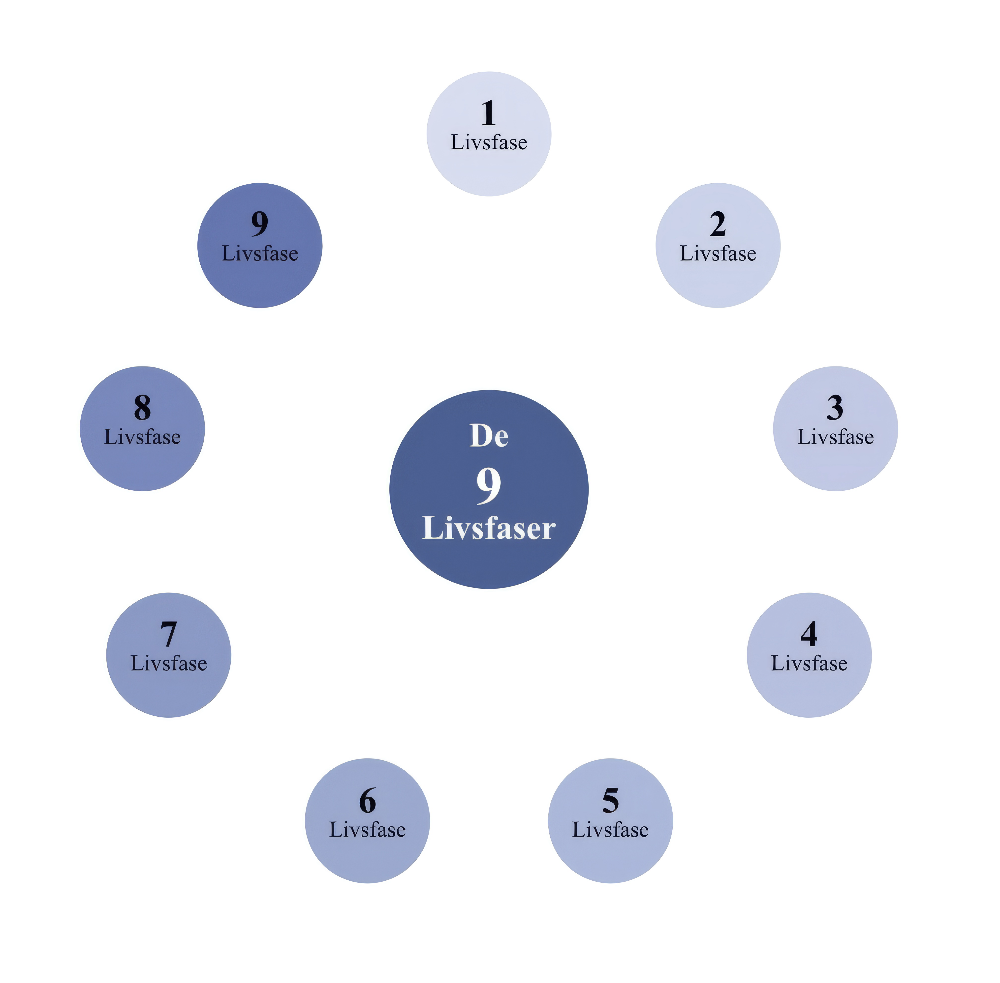
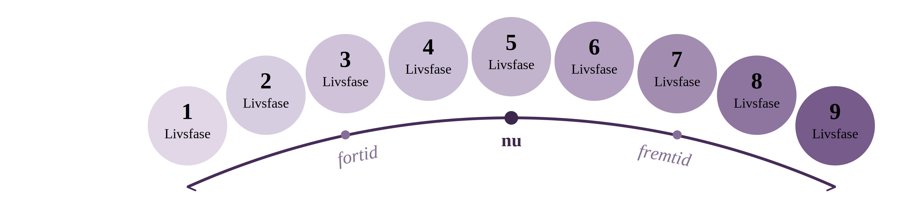
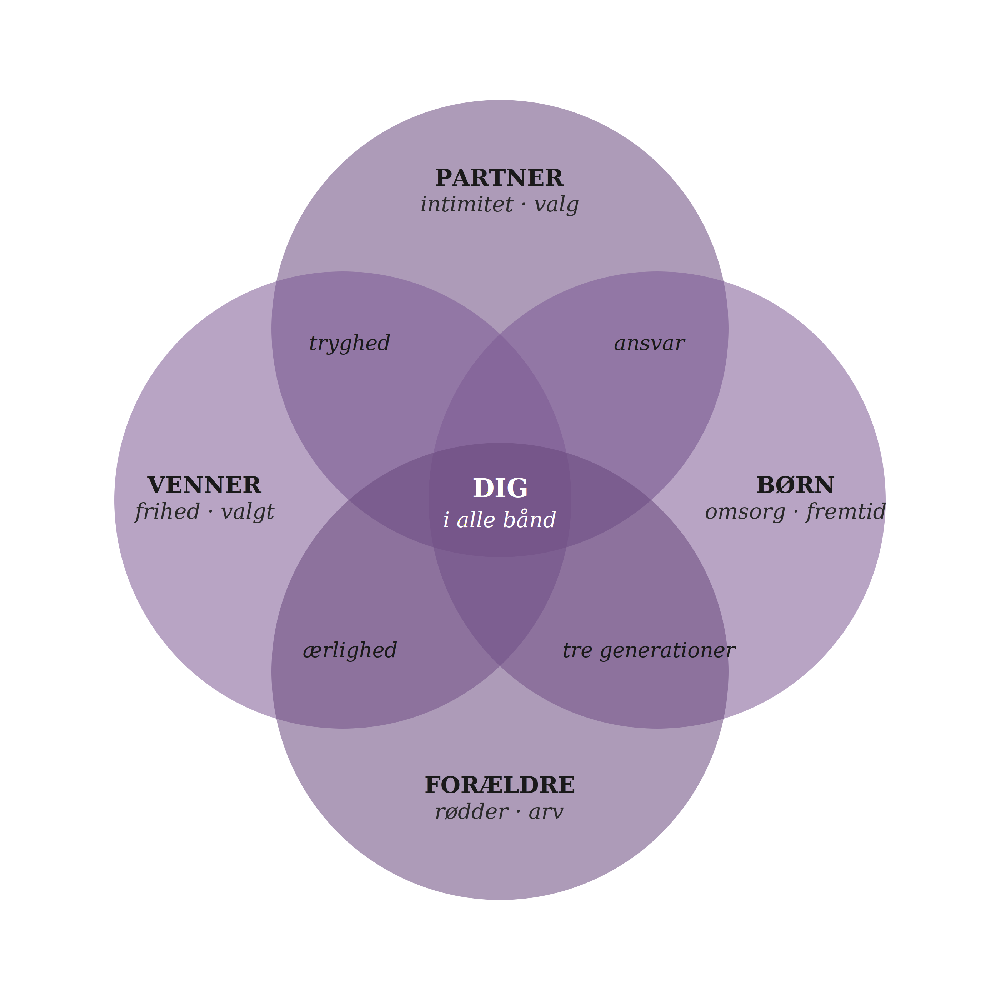
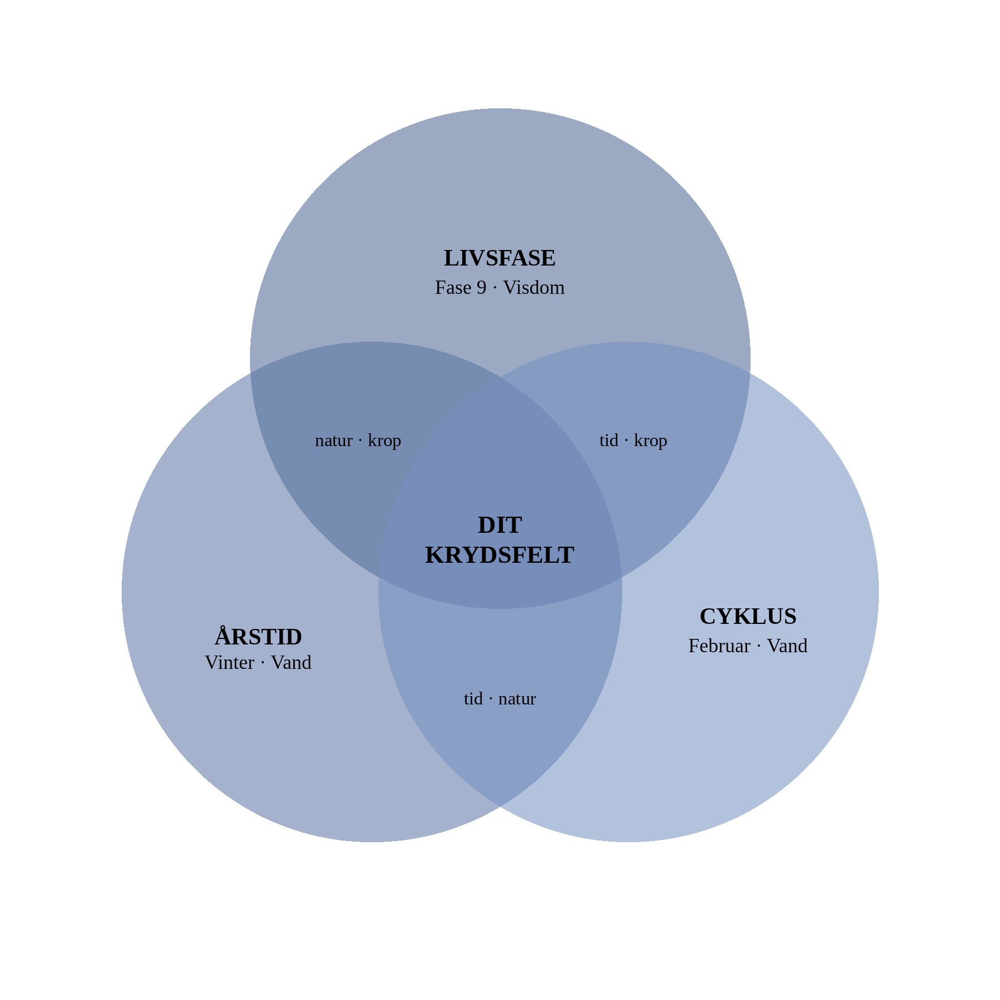
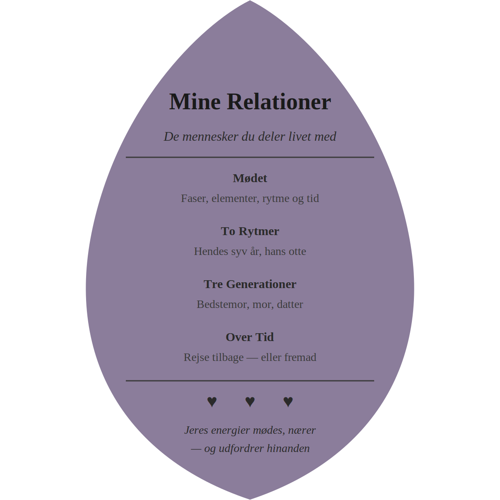
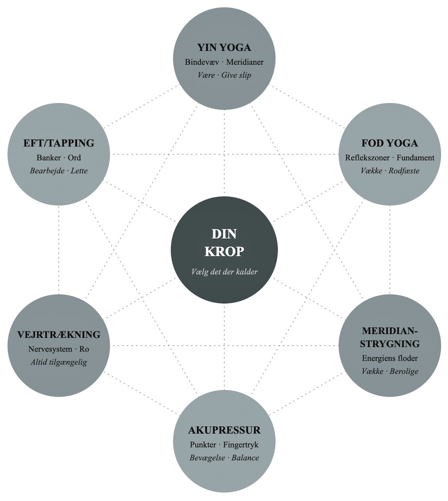
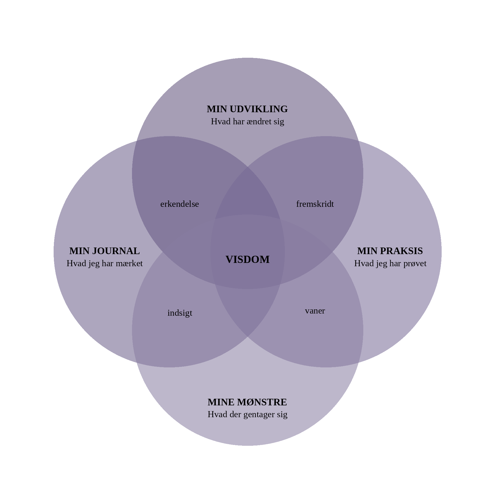
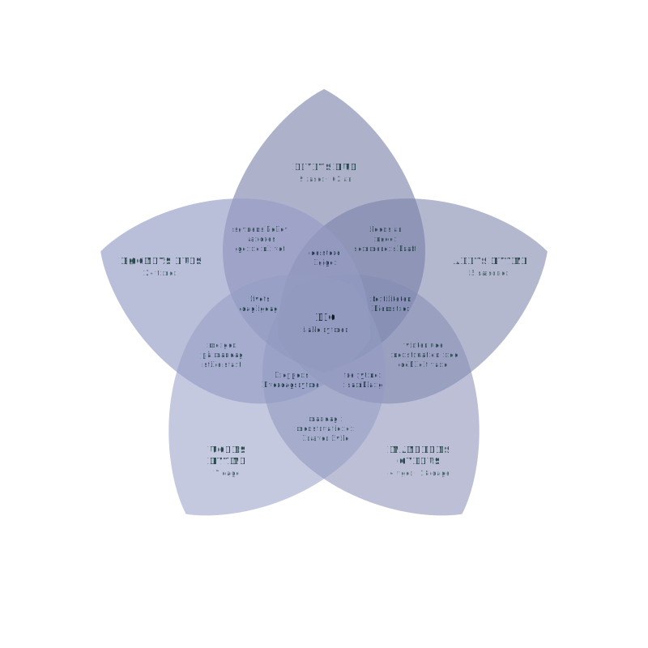

Har du nogensinde undret dig over, hvorfår nogle perioder bare flyder — og andre føles som at gå mod strømmen?
Fem rytmer løber gennem dit liv på én gang — din livsfase, årstiden, måneden, ugedagen og timen. Hver bærer sit eget element: Træ, Ild, Jord, Metal eller Vand.
Tilsammen tegner de et billede af din energi lige nu. Nogle gange peger de i samme retning — og du mærker en dyb ro eller en stærk kraft. Andre gange trækker de i hver sin — og det kan føles uroligt, uden at du ved hvorfår.
· · ·

· · ·
Og der er mere
Denne app viser dig det billede. Og den lader dig rejse i tid — tilbage til en dag der betyder noget, eller frem mod det der venter. Alene, eller sammen med nogen du holder af.
Vand bærer roen og tilliden — men også ængstelsen og usikkerheden. Når fire cyklusser mødes i Vand, kan begge dele mærkes stærkere end vanligt. Det er ikke forkert — det er din energi der samler sig.
· · ·
Hvad kan denne app?
Den ændrer sig — hver dag, i realtid
Når du åbner den i morgen, har billedet ændret sig. Et nyt organur, måske en ny ugedag med et andet element.
Den foreslår noget konkret
Øvelser, kost og åndedræt tilpasset dit element — hver dag.
· · ·
Appens hjerte


Du var 28 og i Ild-energi ved årtusindskiftet. Hvad skete der? Tilføj din partner, din datter, din mor — og se hvordan jeres cyklusser mødes. Også tilbage i tid.
Forstå hvad der skete. Forbered det der kommer. Alene eller sammen med nogen.
Det her var blot et glimt. Nu er du klar til at opleve hele magien folde sig ud …
Hvert afsnit har sin egen figur, sin egen farve og sin egen indgang til systemet
Sektion 1 af 5
De 9 Livsfaser
Mine Cyklusser
Fem rytmer, ét billede
Forstå de kræfter der former din dag
Din livsfase, årstiden, måneden, ugedagen og dit organur — de løber alle på én gang. Her kan du se dem hver for sig, og forstå hvordan de påvirker hinanden.

· · ·
Dit element-klima
Vand
4
Metal
1
Træ
0
Ild
0
Jord
0
Vand dominerer. Din energi samler sig i dybden — det er sjældent, og det mærkes.
Det du måske mærker
Når Vand dominerer, kan det føles som dyb stilhed — men også som en uro der ikke har ord endnu. Måske trækker du dig lidt ind i dig selv. Måske savner du noget du ikke kan sætte navn på. Begge dele er ægte. Du behøver ikke vælge.
Lige nu
4 af dine fem cyklusser peger mod Vand. Din energi samler sig i én retning — det er sjældent.
Se den fulde analyse →
Om 1t 45min
Nyre-energi → Perikardium
I morgen
Lørdag · Jord-energi
· · ·
Forstå dine rytmer
Cyklusser i cyklusser
Når rytmerne mødes
Når livsfase, årstid og måned deler element, opstår resonans. Se alle ti par og mærk hvor rytmerne synger sammen.
→
De fire uger
Månedens fire ansigter
Månecyklus eller menstruation — fire uger med fire elementer. Mærk hvordan din energi skifter karakter fra uge til uge.
→
Prøv lige nu
Chuiii — Vandets healinglyd
En dyb lyd der vibrerer i nyrerne og nærer din grundlæggende livsenergi. Luk øjnene, og sig lyden tre gange på en lang udånding.
Prøv åndedræt →
· · ·
Kroppen og tiden
Kroppens store overgange
De skift der mærkes
Puberteten, moderskabet, overgangsalderen. Hvert stort skifte bærer sin egen visdom og sin egen sårbarhed.
→
Kontrolcyklussen
De fem elementers dans
De fem elementer nærer og kontrollerer hinanden i en evig dans. Forstå hvad der styrker og udfordrer dit dominerende element.
→
« Dine cyklusser er ikke noget du skal mestre. De er noget du kan lytte til — som en melodi der allerede spiller. »
— Isabelle
Dine rytmer i bevægelse
Fem rytmer, én retning. Langsomt skifter strømmene — mærk hvor de samler sig.
· · ·
Livets kapitler
De ni livsfaser
Ni faser · Ni årstider
Fra det første åndedrag til visdommens stille rum. Ni faser med hvert sit element, sin krop og sin opgave.
De mennesker du deler livet med bærer deres egne cyklusser og faser. Her kan du mærke hvordan jeres energier mødes, nærer hinanden og udfordrer hinanden.

D
Dig
Fase 9 · Vand
M
Martin
Fase 6 · Jord
I
Inge
Fase 9 · Vand
+
Tilføj
Jeres energi lige nu
Du er i Vand, Martin i Jord. Det dybe og det trygge mødes stille — en kombination der kan overraske jer begge.
Det I måske mærker
Måske føles det som om I taler forbi hinanden. Eller som om noget er forskudt — uden at nogen af jer kan sætte ord på det. Det er reelt. Vand søger dybde, Jord søger tryghed. I mødes et sted midt imellem.
Lige nu mellem jer
Vand nærer Træ, og Jord kontrollerer Vand. Martin giver dig stabilitet — men du mærker også en begrænsning.
Se den fulde sammenligning →
Martins næste faseskift
Om 5 år · Jord → Metal
I mødes i samme element
Når Martin når Metal · 2031
· · ·
Lige nu
Relationer lige nu
Hvem er tæt på dig?
Se hvem der er i dit liv, og hvad der er aktivt mellem jer. Jeres elementer mødes — nogle dage let, andre dage tungt.
→
Brug den her sætning i dag
« Hvad fylder mest for dig lige nu? »
Jord-energi har brug for at blive set i sin helhed. Spørgsmålet åbner rummet — uden at kræve svar.
Del med Martin →
· · ·
Gå i dybden
To rytmer
Hendes syv år, hans otte
Kvinder følger en syv-års cyklus, mænd en otte-års. Se hvor I mødes, og hvor jeres faser glider fra hinanden.
→
Tre generationer
Mor · Dig · Barn
Tre livsfaser der spejler og udfordrer hinanden. Arv, frihed og fornyelse flettes sammen på tværs af generationer.
→
Noget I kan gøre sammen
Gå en stille tur — uden at skulle noget
Når Vand møder Jord, er stilheden jeres bedste sprog. Gå side om side. Lad ordene komme når de er klar.
· · ·
Over tid
Jeres energi
Vælg en dato, se et møde
Hvad var aktivt mellem jer da I mødtes? Eller når barnet fylder 14? Vælg en dato og se hvad der lå under overfladen.
→
Epigenetik & Arv
Det du bærer med dig
Hvad blev givet videre fra generationer før, og hvad kan du selv vælge at forvandle?
→
« De mennesker der udfordrer dig mest, er ofte dem der bærer den energi du selv har brug for at møde. »
— Isabelle
Jeres møde
To energier, ét mødested. Jord giver fundament. Vand giver dybde. Sammen finder I balancen.
Øvelser, kost, healinglyde og refleksion. Alt er valgt ud fra det element der dominerer dit liv lige nu. Vælg det der kalder — eller lad være.

Dagens element
Vand dominerer lige nu. Din krop beder om stilhed, dybde og næring nedefra.
Det kroppen prøver at fortælle dig
Når Vand dominerer, mærker du det måske som træthed der ikke forsvinder med søvn. Eller som en lænden der er øm, en blære der presser, en uro i knoglerne. Kroppen beder ikke om mere. Den beder om dybere.
I dag · Vand
Vand beder om stilhed og dybde. Lyt indad. Nær det der allerede er der.
Se dagens praksis →
Anbefalet lige nu
Butterfly · Yin Yoga
Åbner hofterne og stimulerer nyremeridianerne. Sid stille, lad tyngden gøre arbejdet. 3–5 minutter.
Prøv nu →
· · ·
Krop
Yin Yoga · Vand
Butterfly
Stille stillinger der åbner meridianer og frigiver spændinger. Tilpasset dit element — 3 til 5 minutter.
→
EFT Tapping
Bankepunkter for ro
Enkle bankepunkter der løsner følelsesmæssige blokeringer. Brug fingrene til at finde ro.
→
Kvinder i din fase bruger mest
Yin Yoga
82%
Vejrtrækning
78%
Kost & urter
74%
Baseret på anonyme erfaringer fra kvinder i alle ni livsfaser
· · ·
Sind
Følelsernes Hjul
Hvad mærker du?
Fem elementer, fem følelsesfelter. Find det der resonerer og forstå hvad kroppen fortæller dig.
→
Mindfulness
Nærvær og stilhed
Korte øvelser i nærvær tilpasset den energi der dominerer dig lige nu.
→
Refleksion
Tre spørgsmål til din fase
Skriv, mærk efter, og lad tankerne lande i deres eget tempo.
→
Tag tre vejrtrækninger
Indånd
Ind 4s·Hold 4s·Ud 6s
Vandets åndedræt. Langsomt og dybt — som bølger der trækker sig tilbage.
· · ·
Næring
Kost & Urter
Det der nærer dit element
De retter og urter der passer til dit element. Vand beder om supper, Ild om bittert, Jord om det søde.
→
Healinglyd · Vand
Chuiii
En lyd der vibrerer dybt og nærer din grundlæggende livsenergi.
→
Hvad har hjulpet andre
Inspiration fra andre kvinder
Andre kvinder i din fase deler hvad der virkede for dem. Inspiration fra den vej andre har gået.
→
« Kroppen lyver aldrig. Den taler bare et sprog vi har glemt at lytte til. »
— Isabelle
Vejen ind
Tre lag. Overfladen er symptomerne. Praksis er vejen. Stilheden er målet.
Se tilbage på dine check-ins, opdag mønstre i din energi, og følg din udvikling over tid. Her samler dine oplevelser sig til indsigt.

Det der er svært at se
Det er næsten umuligt at forstå sin egen rejse mens man er midt i den. Du kan ikke se mønsteret, når du selv er en del af det. Men mønsteret er der. Det viser sig i de øjeblikke hvor noget gentager sig — og i de øjeblikke hvor noget pludselig hører op.
Fase 9 · Visdom
Du er i år 4 af denne fase
56 år63 år
Visdomsfasen fordyber sig. Vand-energien nærer det du allerede ved — og slipper det du ikke længere har brug for.
Din udvikling
12 check-ins denne måned. Dit dominerende element er Vand — og et mønster begynder at vise sig.
Se dine mønstre →
47
Check-ins
8
Refleksioner
3/5
Elementer
14d
Streak
Din rejse har fire retninger
Fire retninger. Én rejse. Alt mødes i det øjeblik du står i nu.
En opdagelse
De sidste 30 dage har Vand domineret dine check-ins. Det spejler din livsfase — du er i resonans med dig selv. Det er sjældent, og det er værd at mærke.
· · ·
Din dagbog
Min udvikling
Energi, stemning, balance
Grafer, statistik og tidslinje over dine check-ins. Se mønstre i din energi — og opdag hvad der gentager sig.
→
Min journal
Et stille rum til dine tanker
Skriv frit, eller brug dagens spørgsmål som afsæt. Ingen regler — bare et sted at lande.
→
Dagens check-in
Hvordan føles din energi lige nu?
Et minut. Fem valg. Ingen forkerte svar. Din stemning i dag bliver en del af dit mønster i morgen.
Registrér →
· · ·
Din samling
Mine favoritter
Det du har gemt
Øvelser, indsigter og sider du vil vende tilbage til. Dit personlige bibliotek.
→
Mine opdagelser
Når noget falder på plads
De øjeblikke hvor noget pludselig gav mening. Saml dine aha-oplevelser — de er værd at vende tilbage til.
→
Næste faseovergang
Om 3 år · Fase 9 slutter
Det nye element
Vand → en ny cyklus begynder
· · ·
Viden
Alle ni faser
Fra fødsel til visdom
Se alle ni livsfaser side om side. Find din, og forstå dem der kom før — og dem der venter.
→
Baggrundsviden
Om bogen og systemet
De fem elementer, de ni faser, og de traditioner der bærer det hele. Anishinaabe, keltisk, vedisk, kinesisk.
→
« Du behøver ikke forstå hele din rejse. Bare det næste skridt. Resten viser sig, når du er klar. »
Dit liv er ikke bare her og nu. Hvert øjeblik bærer aftryk af de cyklusser der var aktive — og foran dig venter nye mønstre. Mine Vinduer er dit tidsrejse-værktøj.
Det der ikke har et sprog endnu
Nogle år bærer vi med os uden helt at vide hvorfår. En periode der ændrede alt. En dato der stadig gør ondt. Måske handler det ikke om at huske bedre — men om at forstå hvad der var på spil dengang. Dine cyklusser kan vise dig det.
Hvad er Mine Vinduer?
Vælg en dato — fortid eller fremtid — og se hvad der var aktivt i dine cyklusser. For dig alene, eller sammen med nogen du holder af. Det er her øjeblikke får forklaring.
Tidsrejsen
Din datter fylder 14 næste år og træder ind i Træ-energi. Du var selv i samme fase da alt forandrede sig. Hvad kan I lære af hinanden?
Åbn Mine Vinduer →
Prøv det — vælg en dato
Da vi mødtesHendes 14-årsdagOm 5 årNæste jul
Dig
Clara
Thomas
Se hvordan jeres cyklusser så ud — og hvad der lå under overfladen
· · ·
Tiden bevæger sig i spiraler
Hvert øjeblik i spiralen bærer sine cyklusser. Vælg et punkt — og se hvad der var på spil.
Tre måder at rejse på
Dig alene
Rejse i din egen tid
Vælg en dato og se hvilken livsfase, årstid og cyklus der var aktiv. Forstå hvad der prægede dig — eller forbered det der kommer.
Dig og én anden
Se jeres energier mødes
Hvad var aktivt mellem jer da I mødtes første gang? Når barnet fylder 18? Vælg en dato og se hvad der lå under overfladen.
Et vigtigt øjeblik
Forstå hvad der skete
En fødsel, et brud, en ny begyndelse. Vælg datoen og se hvilke kræfter der var på spil. Måske giver det mening nu.
· · ·
Dyk dybere
Underside
Mit Livs Tidslinje
Se hele dit liv som en visuel rejse — fase for fase, element for element. Fra fødsel til nu, og videre frem. Forstå den røde tråd i din historie.
Underside
Vigtige Øjeblikke
Gem de datoer der betyder noget — en fødsel, et møde, et brud, en ny begyndelse. Se hvilke cyklusser der var aktive, og del dem med de mennesker det handler om.
Næste årstidsskift
Om 29 dage · Forår (Træ)
Claras næste fase
Om 11 mdr · Fase 3 (Træ)
« Tiden er ikke en linje. Den er en spiral — og de steder der gør ondt, er de steder der vil forstås. »
Dit liv er ikke en række tilfældige år. Det er ni kapitler — hvert med sit eget element, sin egen energi og sin egen opgave. Her kan du se dem alle på én gang.
Dit livs bue
Ni kapitler. Et element per fase. Den røde tråd er dig.
Det er svært at se sin egen historie
Når du står midt i et kapitel, kan det føles endeligt — som om det altid har været sådan. Men din tidslinje viser noget andet. Den viser at hvert kapitel begyndte, udfoldede sig og slap dig videre. Også dette.
Dit nuværende kapitel
Fase 9 · Visdom · Vand-energi. Du er i år 4 af denne fase. Vandet samler, fordyber og giver slip på det der ikke længere tjener dig.
Se hele din tidslinje →
· · ·
Dine ni kapitler
1
Livets begyndelse
0–7 år · 1969–1976
VAND
2
Udforskning
7–14 år · 1976–1983
VAND
3
Forvandling
14–21 år · 1983–1990
TRÆ
4
Blomstring
21–28 år · 1990–1997
TRÆ
5
Ansvar
28–35 år · 1997–2004
ILD
6
Modning
35–42 år · 2004–2011
JORD
7
Høst
42–49 år · 2011–2018
JORD
8
Frigørelse
49–56 år · 2018–2025
METAL
9
Visdom
56–63 år · 2025–2032
VAND
Tilføj til din tidslinje
Var der et øjeblik der ændrede noget?
Tryk på en fase ovenfor og tilføj det du husker. Et brud, en fødsel, en flytning, en erkendelse. Din tidslinje bliver rigere for hvert øjeblik du giver den.
Tilføj et øjeblik →
· · ·
Hvad tidslinjen viser
Vand åbner og lukker din rejse. Det element du begyndte i, vender du tilbage til — men med en helt anden dybde. Det er ikke en gentagelse. Det er en spiral.
Tre lag af forståelse
Det yderste lag er hvad der skete. Det inderste er hvad du ender med at forstå.
· · ·
Næste kapitel
Om 3 år · Fase 9 slutter
Din rejse indtil videre
56 år · 8 kapitler levet
« Hvert kapitel føltes uendeligt mens du levede det. Men se — du er kommet videre. Hver gang. »
Nogle øjeblikke bærer mere end vi tror. En fødsel, et tab, en ny begyndelse. Her kan du gemme dem — og se hvilke cyklusser der var aktive da det skete.
Dine øjeblikke, forbundet
Hvert punkt er et øjeblik. Linjerne er det der forbinder dem. Mønsteret er dit.
Nogle datoer bærer mere end man tror
Der er år vi ikke taler om. Datoer vi undgår. Øjeblikke der stadig kan få hjertet til at slå hurtigere. Måske behøver de ikke at forklares væk. Måske behøver de bare at blive set — gennem de cyklusser der var aktive dengang.
Et gemt øjeblik
« Den dag mor døde » — 14. marts 2019. Du var i Fase 8, Metal-energi: Frigørelse. Hun var i Fase 9, Vand. I var begge i gang med at slippe — på hver jeres måde.
Se alle cyklusser den dag →
· · ·
Dine gemte øjeblikke
23. juni 1997
Dagen vi mødtes
Fase 4 · Blomstring · Træ-energi · Sommer (Ild)
Du var 28, midt i Træs vækst. Thomas var 31, i sin Jord-fase. Træ og Jord nærer hinanden — og det kunne I mærke.
Se alle cyklusser →Del med Thomas →
8. september 2003
Clara blev født
Fase 5 · Ansvar · Ild-energi · Sensommer (Jord)
Ild og Jord sammen — en kraftfuld kombination. Du brændte for dit nye ansvar, og Jorden gav dig grund under fødderne.
Se alle cyklusser →Del med Clara →
14. marts 2019
Mor døde
Fase 8 · Frigørelse · Metal-energi · Vinter (Vand)
Metal handler om at give slip. Vand om at lade det synke ned. Begge dine stærkeste cyklusser handlede om det samme den vinter. Måske var det derfor det både var så tungt og så rigtigt.
Se alle cyklusser →
2. august 2022
Karriereskiftet
Fase 8 · Frigørelse · Metal-energi · Sommer (Ild)
Metal ville give slip på det gamle. Ild ville noget nyt. Spændingen mellem dem var det der fik dig til at springe.
Se alle cyklusser →
· · ·
Hvad gør et øjeblik vigtigt?
Fem dimensioner mødes i hvert øjeblik. Deres overlap er det der gør det betydningsfuldt.
· · ·
Tilføj et øjeblik
Er der en dato du bærer med dig?
Et brud, et møde, en fødsel, et tab. Vælg datoen, giv den et navn, og se hvilke cyklusser der var aktive. Du kan dele den med dem det handler om.
Gem et øjeblik →
Hvad andre gemmer
Børns fødsel
78%
Tab af nære
64%
Parforhold
59%
Baseret på anonyme data fra kvinder i din livsfase
« De øjeblikke vi bærer med os er ikke tilfældige. De er de steder hvor livet insisterede på at blive mærket. »
Som ovenfor, så nedenfor. Dine fem cyklusser taler med hinanden hele tiden — nogle nærer, nogle udfordrer, og nogle spejler det du allerede bærer i dig.

Det du måske mærker
Når mange cyklusser samler sig i ét element, kan det føles som en dyb strøm — men også som ensomhed. Måske mærker du en intensitet der ikke har nogen modvægt. Eller en stilhed der føles for stor. Begge dele er rigtige.
Fuld resonans
4 af dine 5 cyklusser peger mod Vand. Din energi samler sig i én retning — det er sjældent, og det mærkes i hele kroppen.
Det er som en dyb akkord der klinger — alt i dig peger i samme retning.
Næste skift
Om 1t 45min · Nyrer → Perikardium
I morgen
Søndag · Vand-energi
· · ·
Dine fem rytmer
Livets bue
Vand
Fase 9 · Visdom
56–63 år. Energien vender hjem til vandet, hvor den begyndte. Der er en cirkel der sluttes.
Årets rytme
Vand
Vinter
Februar. Årets dybeste Vand-tid. Mørket kalder på hvile og indadvendthed — som frøet under sneen.
Månedens cyklus
Vand
Nymåne · Uge 1
Månecyklussens indre vinter. Energien samler sig i dybden — en tid for stilhed og fornyelse nedefra.
Ugens dage
Jord
Lørdag
Jord-energi i ugen. En dag til at slå rødder, nære dig selv, og mærke fødderne mod jorden.
Døgnets puls
Vand
Nyrer · 17–19
Kl. 17:45 — Nyrernes tid. Den bedste tid til at nære dig selv med varme og stilhed.
· · ·
De par der taler stærkest
Livsfase & Årstid
Spejler
Vand · Vand
Dobbelt dybde. Intuitionen er stærk, drømme og fornemmelser flyder frit. Giv dig selv lov til at være i det uden retning.
Livsfase & Måned
Spejler
Vand · Vand
Din livsfase og din månecyklus synger i samme toneart. Dobbelt Vand — dobbelt dybde. Det er sjældent at både den store bue og den lille cyklus mødes her.
Årstid & Måned
Spejler
Vand · Vand
Vinteren og nymånen mødes. Naturens store cyklus og din indre månecyklus peger begge mod stilhed. Kræfterne forstærker hinanden.
· · ·
Strømmenes vævning
Fem strømme, ét øjeblik. Den stiplede vej er Jord — ugedagen der krydser dine Vand-strømme og giver modvægt.
· · ·
Spejlingerne
6 af dine 10 par spejler hinanden
Dobbelt dybde. Intuitionen er stærk, drømme og fornemmelser flyder frit. Giv dig selv lov til at være i det uden retning.
Din omsorg vil holde fast, men strømmen vil videre. Spændingen mellem tryghed og flow er din læring i dag.
Livsfase & Ugedag
Udfordres
Vand · Jord
Jord kontrollerer Vand i TCM. Lørdagens tryghedssøgen presser din visdomsfases behov for at flyde frit. Mærk spændingen — den bærer en indsigt.
Årstid & Ugedag
Udfordres
Vand · Jord
Vinteren søger indadvendthed, men lørdagen inviterer til omsorg for andre. Balancen ligger i at nære uden at tømme dig selv.
Måned & Ugedag
Udfordres
Vand · Jord
Nymånens stille begyndelse møder lørdagens jordede energi. Måske føles det som modstand — men det er også en invitation til at lande.
Ugedag & Organur
Udfordrer
Jord · Vand
Lørdagens Jord udfordrer aftenens Vand-energi. Den del af dig der vil holde fast, møder den del der vil slippe. Begge har ret.
· · ·
Det samlede billede
Det betyder
4 af dine cyklusser peger mod Vand — kun ugedagen bryder mønstret med Jord. Du er i dyb resonans. Det kan føles som en stille kraft, der ikke behøver ord.
Prøv lige nu
Chuiii — Vandets healinglyd
Når Vand dominerer, kan denne lyd forstærke resonansen. Luk øjnene. Sig lyden tre gange på en lang udånding. Mærk vibrationen i lænden og nyrerne.
Prøv åndedræt →
« Dine cyklusser er ikke noget du skal mestre. De er noget du kan lytte til — som en melodi der allerede spiller. »
Fra pubertetens Træ-energi til overgangsalderens Metal — der er vendepunkter i livet hvor kroppen skifter grundtone. Ikke sammenbrud, men overgange. Døre du går igennem.
Dit livs bue
Seks vendepunkter, én sammenhængende bue. Du er forbi dem alle — og kroppen bærer dem stadig.
Det kroppen husker
Hver overgang føles som et tab, mens du er i den. Puberteten der væltede alt. Det moderskab der forandrede din krop for evigt. Overgangsalderen der tog en hel rytme fra dig. Men bagefter kan du se det — det var ikke tab. Det var forvandling.
Hvor du er nu
Du er forbi livets store vendepunkter. Overgangsalderen ligger bag dig, og kroppen har fundet en ny ro. Den energi du har nu er roligere, dybere, mere samlet.
Vand-energien runder cirklen — du bærer den samme essens som barnet.
· · ·
Seks vendepunkter
Omkring 7 år
Vand → Træ
De første tænder og den første bevidsthed
Nyre-Qi’en viser sig for første gang. Blivende tænder, tykkere hår, en begyndende selvbevidsthed.
Omkring 14 år
Træ → Ild
Puberteten og den månedlige cyklus
Menstruationen begynder. Kroppen er klar til at bære liv. En ny rytme lægges ovenpå livets bue.
Omkring 28 år
Ild
Kroppens toppunkt
Qi’en er på sit stærkeste. Knogler, muskler, fertilitet — alt på sit højeste. Ild-energi på sit mest intense.
Kroppens tre årstider
Spiring, fylde, frigørelse. Kroppens tre store bevægelser — fra det der vokser, til det der bærer, til det der slipper.
Omkring 35 år
Ild → Jord
Det stille vendepunkt
Det første skift indad. Fertiliteten begynder at aftage. Yang vender langsomt mod Yin. Ingen fejrer denne overgang — men den ændrer alt.
Omkring 49 år
Jord → Metal
Overgangsalderen
Den månedlige cyklus stopper. En hel rytme forsvinder. Metal-energi — at give slip, at sortere det essentielle fra det overflødige.
63+ år
Metal → Vand
Vandets tilbagevenden
Energien runder cirklen. Du bærer den samme essens som barnet — men med alt, livet har lært dig. Stilheden er ikke tom. Den er fuld.
· · ·
Det hun ville sige til dig
Isabelles ord til dig
Hver overgang føles som et tab, mens du er i den. Bagefter kan du se, at det var en dør. Du har gået gennem dem alle — og du er stadig her.
Din sidste store overgang
Overgangsalderen · ~11 år siden
Den nye cyklus
Fase 9 slutter om ~3 år
· · ·
For din krop lige nu
Butterfly · Yin Yoga
Nyremeridianerne bærer din grundlæggende livsenergi. Denne stilling åbner hofterne og nærer det Vand-element der følger dig nu. Sid stille, 3–5 minutter.
Prøv nu →
« Det stille vendepunkt er den mest underkendte overgang. Ingen fejrer den — men den ændrer alt. »
Fra det første åndedrag til visdommens stille rum strækker ni livsfaser sig. Hvert kapitel har sit element, sin energi og sine gaver. Du har gået igennem otte af dem — og bærer dem alle i dig.
Livets cirkel
Ni faser, fem elementer, én cirkel. Vandets energi begynder og slutter rejsen.
Det alle faser har tilfælles
Ingen fase er forkert. Det du oplever lige nu — ro, tvivl, længsel — er præcis det, din fase handler om. Du har aldrig helt forladt en fase. Barnet lever stadig i dig. Teenageren. Den unge kvinde. De er her alle — lag på lag, som ringe i et træ.
Din fase lige nu
Fase 9 — Visdommens tid. Vand-energien er vendt tilbage. Cirklen slutter sig. Du bærer alle faser i dig nu — ikke som tyngde, men som dybde.
Fra barnets stille sø til ungdommens eksploderende forår. Her grundlægges tillid, nysgerrighed og den første identitet.
Fase 1 · 0–7 år
Vand
Livets begyndelse
Den spæde begyndelse. Barnet lever i ren sansning — tillid, berøring, lyd. Alt er flydende som vand. Her grundlægges alt det, der kommer.
Fase 2 · 7–14 år
Vand
Udforskning
Verden åbner sig. Nysgerrigheden driver barnet fremad, og leg er det vigtigste arbejde der findes. Vandets flow har fået retning.
Fase 3 · 14–21 år
Træ
Forvandling
Puberteten er Træets fulde kraft. Kroppen ændrer sig, identiteten søger form. Alt det gamle dør langsomt, mens noget nyt bryder igennem.
· · ·
Livets midte
Fase 4–6 · 21–42 år
Blomstring, ansvar og den stille modning. Årene hvor du bygger, brænder og langsomt lærer at vælge.
Fase 4 · 21–28 år
Træ
Blomstring
Den unge kvinde træder frem med sin egen kraft. Drømme, uddannelse, de første store valg. Energien er ekspansiv — alt synes muligt.
Fase 5 · 28–35 år
Ild
Ansvar
Hjertets tid. Karriere, måske børn, måske parforhold. Alt brænder med fuld intensitet — men flammen kræver brændstof.
Fase 6 · 35–42 år
Jord
Modning
Det stille vendepunkt. Hvad er essentielt? Erfaring bliver til visdom, og rødder vokser dybere end nogensinde.
Elementernes vandring
Livet begynder og slutter i Vand. Imellem flyder det gennem Træ, Ild, Jord og Metal — hvert element med sin opgave.
· · ·
Den modne rejse
Fase 7–9 · 42–63+ år
Høst, frigørelse og visdommens tilbagevenden. Her finder du det essentielle — og slipper resten.
Fase 7 · 42–49 år
Jord
Høst
Overgangsalderen nærmer sig. Kroppen beder om balance og ro. Men en stille styrke vokser — af erfaring, ikke ambition.
Fase 8 · 49–56 år
Metal
Frigørelse
Det essentielle viser sig med klar tydelighed. Roller falder, forventninger løsner. En ny lethed opstår.
Fase 9 · 56–63+ år
Du er her
Visdom
Cirklen sluttes. Vand-energien vender hjem. Du flyder igen — men nu med en dybde der kun kommer af at have levet fuldt.
· · ·
Cirklen der slutter sig
Det smukke ved den niende fase
Vandets energi vender hjem. Du begyndte med tillid og sansning — og du ender med visdom og indsigt. Det er den samme essens, bare dybere. Den vise kvinde bærer alle fasers erfaring i sig.
Din position
4 år inde i fase 9
Næste kapitel
Fase 9 slutter om ~3 år
· · ·
For din fase lige nu
Sleeping Swan · Yin Yoga
Stimulerer nyrerne og åbner hofterne. En stilling for den kvinde der har gennemlevet det meste og nu søger integration og ro. 3–5 minutter i stilhed.
Prøv nu →
« Hvert kapitel i livet er en hel årstid. Du kan ikke springe foråret over. Men du kan lære at elske det regn, der følger med. »
Uanset om du følger din menstruation eller månens rytme — hver uge bærer sit eget element og sin egen invitation. Du er forbi den månedlige blødning, men cyklussen lever videre i månens faser.
Månens fire faser
Fire faser, fire elementer. Månen følger den samme rytme som kroppen — fra stilhed til udfoldelse og hjem igen.
Det din krop stadig husker
Mange kvinder tror, cyklussen stopper med menstruationen. Men kroppen følger stadig en fire-ugers rytme — nu blot i dialog med månen. Du mærker det i energien, søvnen, humøret. Det er ikke indbildning. Det er din krop der husker.
Denne uge
Nymåne — Vandets tid. Stille, mørk, reflekterende. En tid for nye intentioner, indre lytning og hvile. Energien er på sit laveste, og det er en gave.
Vand · Indadvendt energi · Dag 1
To cyklusser, én rytme
For kvinder med menstruation følger de fire uger kroppens egen rytme. For dig følger de månens — men mønsteret er det samme: indadvendthed, vækst, udfoldelse, tilbagetrækning.
· · ·
De fire faser
Nymåne · Uge 1
Du er her
Indadvendt energi
Vand
Vandets tid — stille, mørk, reflekterende. En tid for nye intentioner, indre lytning og hvile. Energien er på sit laveste, og det er en gave.
Tiltagende måne · Uge 2
Træ
Stigende energi
Månen vokser, og med den din energi. Vækst, planlægning, handling. En god tid for at sætte ting i gang og følge dine intentioner.
Fuldmåne · Uge 3
Ild
Udadvendt energi
Alt er i fuld blomst. Følelser, drømme og energi er på sit højeste. En tid for forbindelse, fejring og kulminationer.
Aftagende måne · Uge 4
Jord
Faldende energi
Månen mindskes, og vi samler ind. Sortering, eftertanke, taknemmelighed. Slip det der ikke tjener dig, og forbered en ny cyklus.
· · ·
Energiens bølge
Fra stilhed til udfoldelse og hjem igen. Energien følger månens bue — og den gentager sig hver måned.
Det månen lærer dig
Hver fase har sin gave
Nymånens stilhed giver plads til intentioner. Tiltagende måne bærer dem fremad. Fuldmånen viser dem i fuldt lys. Og den aftagende måne lærer dig at slippe det der ikke hører til. Ingen uge er spildt.
Denne fase
Nymåne · Vand-energi
Næste fase
Om ~7 dage · Tiltagende måne
· · ·
For denne uge
Butterfly · Yin Yoga
Nymånens stille energi kalder på hofteåbnere og nyrestimulering. Sæt dig i Butterfly, luk øjnene, og lad 3–5 minutters stilhed give plads til en ny intention.
Prøv nu →
« Cyklussen stopper ikke — den skifter bare rytme. Fra kroppens indre til månens ydre. Den samme bølge, det samme hav. »
Hvert menneske i dit liv bærer sit eget element. Når jeres energier mødes, sker der noget — noget der nærer, noget der udfordrer, noget der spejler det du selv bærer. Her kan du mærke det.
Jeres forbindelsesfelt
To relationer, to dynamikker. Martin udfordrer dit flow med sin tryghed. Inge spejler din dybde i stilhed.
Det du mærker, når I er sammen
Måske undrer du dig over, hvorfor nogle mennesker føles som at komme hjem — mens andre langsomt tømmer dig. Det handler ikke om vilje. Det handler om elementer der mødes, rytmer der kolliderer eller flyder sammen. Kroppen ved det før sproget.
Dig og Martin lige nu
Vand møder Jord. Hans omsorg giver dig retning — men du mærker også en tyngde, en begrænsning. Det er ikke forkert. Det er to elementer der forhandler.
Se den fulde sammenligning →
· · ·
Dine relationer
Martin · Partner · Jord
Jord kontrollerer Vand
Jord giver stabilitet og fundament — men i TCM kontrollerer Jord også Vand. Du mærker det som tryghed blandet med begrænsning. Forskydningen er reel — og midlertidig.
→
Inge · Mor · Vand
Vand spejler Vand
I deler den samme dybde — en stille forståelse uden ord. To kvinder i Visdom-fasen. Det er sjældent, og det er kostbart. Mærk det næste gang I taler.
→
Spørg dig selv
Hvem giver dig energi — og hvem kræver den?
Det er ikke et spørgsmål om skyld. Det er et spørgsmål om elementernes samspil. Kroppen ved allerede hvem der nærer dig og hvem der koster.
· · ·
Det der nærer og det der udfordrer
Hver relation bærer begge dele. Det der nærer kan også udfordre — og det der udfordrer kan vise vej.
Jeres element-dynamik
Når Vand dominerer i dig, søger du dybde og stilhed. Martin i Jord søger tryghed og fundament. Inge i Vand spejler din søgen. Hver relation aktiverer en forskellig del af dit element — og det skifter med tiden.
Martins næste faseskift
Om 5 år · Jord → Metal
Jeres rejse sammen
17 år · 3 faseskift delt
« De mennesker vi vælger at bære med os, er sjældent tilfældige. De bærer det element vi selv mangler — eller det vi har for meget af. »
Kvinder følger en syv-års cyklus, mænd en otte-års. Den lille forskel skaber en forskydning der vokser med årene — og rammer præcis de steder, hvor de store livsvalg skal træffes.
Jeres to rytmer
Du er i Visdom (Vand), Martin i Kongen (Jord). Jeres faser løber parallelt — men aldrig synkront.
Forskydningen ingen taler om
Måske har du mærket det uden at kunne sætte ord på det. At I begge er i forandring — men i forskelligt tempo. At når du søger dybde, søger han struktur. Det er ikke uenighed. Det er forskydning.
Jeres forskydning
16 år mellem jeres fasestart. Du gik ind i Visdom-fasen, da Martin stadig var i Krigerens Ild. Den afstand er ikke et problem — den er et vindue.
Forstå hvad forskydningen betyder →
· · ·
DIG
60 år
Fase 9 · Vand
7 × 9 = 63
MARTIN
43 år
Fase 6 · Jord
8 × 6 = 48
Hvad forskydningen betyder
Du er i Vand, Martin er i Jord. I har ca. 3 år i jeres nuværende konstellation. Brug dem bevidst — denne dynamik er midlertidig. Når Martin når Metal om 5 år, skifter alt mellem jer.
· · ·
Samtaleåbnere · Vand
Spørg ham
« Hvad fylder mest for dig lige nu — og er der noget der presser, som du ikke har sagt højt? »
Vand-energi åbner rummet for ærlighed. Spørgsmålet giver plads — uden at kræve svar.
Sig til ham
« Jeg har været der, hvor du er nu. Ikke præcis det samme sted, men i den slags spørgsmål. »
At dele sin erfaring uden at belære. Vand tilbyder — uden at insistere.
Spørg jer selv
« Hvor er vi forskellige lige nu — og hvad kan vi lære af det? »
Forskydningen er ikke en fejl. Den er et vindue til at se hinanden på ny.
Del med Martin →
· · ·
Jeres positioner
To ure der tikker i forskellig hastighed. Forskellen er ikke en fejl — den er et vindue til at forstå hinanden.
Martins næste fase
Om 5 år · Metal · Vismanden
I mødes i samme element
2039 · begge i Vand
« Forskydningen mellem en kvindes syv-års rytme og en mands otte-års rytme er ikke en fejl. Det er livets måde at sikre, at I aldrig holder op med at overraske hinanden. »
Din mor bærer sin historie, du bærer din, og din datter skriver sin. Tre generationer, tre faser, tre elementer — og et usynligt bånd der forbinder dem på tværs af tiden.
Jeres stammetræ
Tre generationer. Inge og du deler Vandets dybde. Clara brænder med Ildens intensitet. Mellem jer løber arv, frihed og fornyelse.
Det der går videre
Der er ting du bærer fra din mor, som du aldrig har sat ord på. Måder at tie på. Måder at elske på. Og der er ting din datter allerede bærer fra dig — selvom hun endnu ikke kan se det. Det er ikke skrøbelighed. Det er forbindelse.
To i Vand, én i Ild
Inge og du deler Vandets dybde — den stille forståelse der ikke kræver ord. Clara brænder med Ildens intensitet. Din ro kan dæmpe hendes flamme — men også beskytte den.
Se elementernes samspil →
· · ·
INGE
Vand
85 år
Stilhed Dybde Tålmodighed
DIG
Vand
60 år
Visdom Intuition Indre ro
CLARA
Ild
32 år
Passion Nærvær Handling
De usynlige bånd
Arv · Inge → Dig
Det hun gav dig uden ord
Vand nærer Vand. Din mors stilhed blev din intuition. Hendes tålmodighed blev din dybde. Det du arver er ikke altid synligt — men det bærer dig.
→
Frihed · Dig → Clara
Det du giver hende plads til
Vand møder Ild. Din ro kan dæmpe hendes flamme — men også beskytte den. Den største gave er at lade hendes ild brænde uden at sløkke den.
→
Fornyelse · Clara → Inge
Det nye der forbinder det gamle
Claras Ild bringer varme til Inges Vand. Barnebarn og mormor deler en forbindelse der springer en generation over — og fornyer det hele.
→
Noget du kan gøre i dag
Ring til din mor. Ikke for at sige noget bestemt.
Bare for at mærke stilheden mellem jer. Den stilhed er Vand — og den bærer mere end ord.
· · ·
Tre energier, ét felt
Inges og din bølge følges ad — stille, dybe, parallelle. Claras bølge slår højere og skarpere. Sammen skaber I en polyfoni.
Hvad tre generationer viser
Når to generationer deler samme element, opstår en særlig resonans. Du og Inge forstår hinanden uden ord. Claras Ild bringer en energi ingen af jer har — og det er præcis det der giver familien liv.
Claras næste fase
Om 3 år · Ild → Jord
Inges tidslinje
85 år · 9 kapitler levet
« Det du arver fra din mor er ikke bare gener. Det er også den energi hun bar, de spørgsmål hun aldrig stillede — og de svar hun fandt i stilhed. »
Hvad skete der mellem jer den dag I mødtes? Eller den dag barnet blev født? Vælg en dato — og se hvilke elementer der var aktive, og hvad det betød for jeres møde.
Elementernes samspil
Dit Vand-element og Martins Jord-element. Jord kontrollerer Vand i TCM — det mærkes som tryghed blandet med begrænsning.
Datoer der bærer mere end vi tror
Nogle dage ændrer alt. Den dag I mødtes. Den dag barnet blev født. Den dag nogen gik. Bag hver dato gemmer sig et møde mellem elementer — en konstellation du ikke vidste eksisterede, men som du mærkede i kroppen.
Da Clara fyldte 14 · 2008
Du var 42 — på tærsklen til Høst-fasen, Jord. Clara var i Forvandlingens Træ. Træ vokser op fra Jord. Måske var det derfor det år føltes som både tab og vækst.
Undersøg en anden dato →
· · ·
Dig
Martin
Inge
Clara 14 år
2008
I mødtes
2009
I dag
2026
Om 5 år
2031
2008 · Claras 14. år
Dig: 42 år · Fase 7 · Jord Clara: 14 år · Fase 3 · Træ Træ vokser op fra Jord. Din datter sprang op fra dit fundament — og det føltes som både gave og tab.
Prøv selv
Vælg en dato der betyder noget for jer
En fødselsdag, en dag I mødtes, en dag nogen gik. Se hvilke elementer der var aktive — og hvad det fortalt om mødet mellem jer.
Vælg dato →
· · ·
Et øjeblik i tiden
Hvert øjeblik bærer sine egne elementer. Når du vælger en dato, åbner du et vindue til den energi der var aktiv — og forstår måske lidt mere af det der skete.
Næste vigtige dato
Clara fylder 35 · Ild → Jord · 2029
Martins milepæl
Fase 7 · Metal · 2031
« Bag hver dato gemmer sig et møde mellem elementer. Det vi oplevede var aldrig kun det vi troede — der var altid mere på spil. »